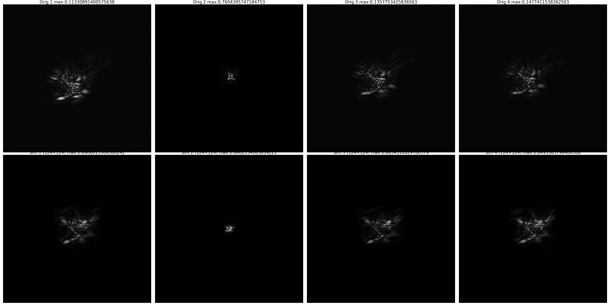

波前重构技术
1. 光瞳仿真中的傅里叶变换：从周期延拓的数学宿命到波动光学的衍射极限
1.1. 从夫琅禾费衍射到 FFT：物理定律的数值翻译
在物理光学中，计算一个光学系统焦平面上的光场分布，通常始于夫琅禾费衍射积分（Fraunhofer Diffraction Integral）。对于位于透镜前焦面（或光瞳面）的复振幅分布 ，其后焦面上的复振幅 正比于 的二维连续傅里叶变换（Continuous Fourier Transform, CFT）：
其中：
- 是光瞳函数（Pupil Function）
- 是孔径透过率（光瞳内通常为 1，光瞳外严格为 0）
- 是波前像差（可能包含倾斜 、离焦、像散等）
- , 是空间频率坐标， 为波长， 为透镜焦距
这个积分的物理意义非常深刻：焦平面上的每一点，都是整个光瞳面上所有子波源发出的球面波相干叠加的结果。透镜的作用，本质上是把远场的夫琅禾费衍射图样聚焦到了它的后焦平面上，从而把原本需要传播很远距离才能看到的衍射斑，"压缩"到了焦平面附近。
1.1.1. 为什么计算机需要 DFT？
连续傅里叶变换是一个无穷积分，涉及连续函数和无限域。计算机无法直接处理无穷和连续，因此必须进行三重离散化：
| 物理现实 | 数值计算 | 引入的代价 |
|---|---|---|
| 连续空间 | 离散采样网格 | 采样定理约束：空间细节必须被足够密的网格捕捉 |
| 积分限无穷大 | 有限求和（ 网格） | 截断误差：用有限区域近似无穷积分 |
| 直接积分 复杂度 | 快速傅里叶变换（FFT） | 周期延拓假设：DFT 的数学根基 |
当我们写下：
1 | U_f = torch.fft.fft2(pupil_complex) |
我们实际上是在计算二维离散傅里叶变换（2D-DFT）：
这个公式在数学上是对 CFT 的黎曼和近似。当采样足够密（满足奈奎斯特采样定理）、网格足够大时，DFT 的结果可以收敛到 CFT 的结果。
1.2. DFT 的数学宿命：周期延拓不是物理假设，而是算法根基
1.2.1. 紧支集的物理现实
在真实物理中，光瞳函数 具有紧支集（Compact Support）：光瞳内（透镜口径范围内）有光场分布，光瞳外严格为 0。
这不是数值近似，而是物理现实。 透镜的边框、镜筒、光阑（Aperture Stop）把光挡住了。光瞳外没有光能参与成像。因此，真实的夫琅禾费衍射积分虽然在形式上写成了 ，但由于 在光瞳外为 0，积分实际上只在有限区域内非零：
这是一个紧支集函数的连续傅里叶变换。从数学分析可知，紧支集光滑函数的傅里叶变换是整函数（Entire Function），在频域上是无限延伸且无限可微的，没有任何周期性。
1.2.2. DFT 天生的周期性
离散傅里叶变换的公式定义在周期序列上。DFT 从不"认识"有限序列，它只认识周期为 的无限序列的一个主值周期：
这个公式的隐含前提是：输入序列 以 为周期无限重复。换句话说，DFT 计算的不是"一个有限图像的频谱"，而是这个图像作为无限周期瓷砖阵列的一个周期单元的离散频谱。
这意味着：
- 空间域周期化：你的 图像被数学强制理解为在上下左右四个方向无限平铺。
- 频率域周期化：输出的频谱也是周期为 的离散序列。
周期延拓不是你可以通过某种参数"关闭"的选项，它是你用 FFT 这个工具时必须接受的数学现实。 FFT 算法之所以能达到 的复杂度（而非直接积分的 ），正是因为它利用了这种周期性结构（通过单位根的周期性简化计算）。
1.2.3. 为什么不能直接"假设光瞳外为 0"？
DFT 的基函数是复指数函数 ，这些基函数本身是**全局支撑（global support）**的——它们在整个周期上非零。DFT 本质上是把输入信号投影到这组正交周期基上。你无法用一组周期基去"表达"一个非周期边界条件（紧支集），除非通过某种方式把边界推到足够远，使其影响可忽略。
换句话说，当你使用 FFT 时，你已经在数学上"签约"接受了周期世界。紧支集的物理现实，必须在这个周期框架内被重建出来，而不是被直接施加。
1.3. 零填充：在周期框架内重建紧支集物理
既然周期延拓不可消除，那么如何让它对真实物理的干扰最小化？答案就是零填充（Zero-Padding）。
1.3.1. 零填充的数学本质
零填充的操作极其简单：把原本大小为 的光瞳函数，嵌入到一个更大的 数组（）的中央，光瞳外的区域全部填充 0。
1 | # 假设光瞳是 D x D，嵌入到 N x N 的网格中 |
在数学上，这等价于对原始光瞳函数 进行上采样（Upsampling）——即在更细的频率网格上计算其傅里叶变换。从卷积定理的角度看，零填充后的 DFT 输出，是原始光瞳 DFT 与 sinc 函数的卷积，但由于零填充增加了采样密度，这个 sinc 函数在频域上被压缩，从而更精确地采样了真实的连续频谱。
1.3.2. 为什么零填充能消除周期延拓的伪影？
考虑不做零填充的情况：光瞳填满整个 网格。此时 DFT 的周期延拓会在边界处产生硬截断跳变：
1 | 周期单元（光瞳填满网格）： |
如果光瞳在边界处不是周期连续的（例如圆形光瞳被方形网格截断），这种跳变在数学上是一个不连续函数，其傅里叶变换会产生严重的吉布斯现象（Gibbs Phenomenon）和频谱泄漏（Spectral Leakage）。此时 FFT 计算的不是"单个孔径的衍射"，而是无限大周期孔径阵列（Periodic Aperture Array）的衍射——这在物理上完全错误。
而做了零填充之后：
1 | 周期单元（光瞳只占网格中心一小部分）： |
此时，周期延拓的相邻"瓷砖"之间被大量 0 隔开，拼接处是 0 与 0 相接，没有任何跳变不连续。在这个巨大的周期单元内部，光瞳被 0 包围，数学上完美复现了"紧支集"的物理图景。
周期延拓引入的"假邻居"被推到很远的地方，其频谱泄漏主要落在高频区域，而你的有效频带内几乎不受影响。
1.3.3. 零填充不会增加物理信息，但提高数值精度
这是一个常见的误解：零填充能提高分辨率吗？
不能。 零填充不会增加任何物理上不存在的信息，也不会突破衍射极限。光学系统的物理分辨率（瑞利判据）由光瞳口径 和波长 决定：
零填充改变不了这个极限。它改善的是数值采样精度：
- 不做零填充（即使不做0填充，实际上圆形光瞳外还是有0填充的，也会有一个被污染的艾里斑）：FFT 输出可能只采样了 sinc/Airy 函数的 3~4 个点，峰值位置可能被网格量化误差偏移，旁瓣结构扭曲。
- 做零填充（在数学上逼近了紧支集假设）：同一个衍射斑被采样了几十甚至上百个点，峰值位置更准确，旁瓣的对称性和深度更干净，能量守恒更容易满足。
1.3.4. 实验验证：零填充对 PSF 重建的影响
为了直观展示零填充对仿真精度的影响，下面是同一组波前（原始尺寸 ）在两种处理方式下的对比结果。上排为实验采集的真实点扩散函数（Orig），下排为对应波前生成的仿真点扩散函数（Sim）。
将波前零填充至 后仿真：
不做零填充（原始 ）直接仿真：

1.3.5. 填充多少合适？
| 填充倍数 | 光瞳占网格比例 | 适用场景 |
|---|---|---|
| 1×（不填充） | 100% | 仅用于快速测试，会引入严重混叠 |
| 2× | 25% | 快速估算，混叠基本可控，旁瓣可见 |
| 4× | 6.25% | 标准精度，旁瓣干净，能量守恒良好 |
| 8× | 1.56% | 极高精度，或光瞳边缘相位变化剧烈（如高阶像差） |
经验法则：如果你看到焦平面的 PSF 在边缘处有奇怪的振荡，或者总能量在正逆变换后不守恒，通常就是零填充不够。
1.3.6. 归一化的选择
torch.fft.fft2 的 norm 参数决定了正逆变换的归一化方式：
norm='backward'（默认）：正变换不归一化，逆变换除以 。这是传统信号处理用法。norm='ortho'（推荐）：正逆变换都除以 （即 ）。这保证了**帕塞瓦尔定理（Parseval’s Theorem）**成立——空间域和频率域的能量相等。
在光学仿真中，能量守恒通常是重要的物理约束（光瞳内的总功率应等于焦平面上的总功率），因此推荐使用 norm='ortho'。
这里你 pad 了之后并不会影响最终仿真图像的大小，因为 pad 只是让频域的采样点更密（频率分辨率更高），它并不改变 FFT 能分析到的最大频率。真正决定最大频率的是光瞳面的采样率 —— 越小，频域覆盖越宽； 不变，最大频率就不变。而焦平面的总尺寸正比于这个最大频率，所以无论你 pad 多少，仿真输出的像素数虽然变多了、每个像素变小了，但总的物理视场始终不变。再经过 scale 缩放到物理靶面坐标后，最终图像的大小自然也是一样的。换句话说，pad 改变的是“采样密度”，不是“采样范围”；图像的物理尺寸由采样范围决定，因此与 pad 无关。
| 量 | 不 padding（） | Padding 4×（） | 是否改变 |
|---|---|---|---|
| 光瞳采样间隔 | ❌ 不变 | ||
| 频域总宽度 | ❌ 不变 | ||
| 焦平面总视场 | FOV | FOV | ❌ 不变 |
| 频率步长 | ✅ 变密 4 倍 | ||
| 焦平面像素大小 | ✅ 变小 4 倍 | ||
| 输出数组像素数 | ✅ 变多 4 倍 | ||
| 总物理尺寸 | ❌ 不变 |
1.4. 无限平面波 vs 有限孔径：几何光学与波动光学的分水岭
1.4.1. 几何光学的直觉
在几何光学（射线光学，Ray Optics）中，一个倾斜的平行平面波被理想透镜汇聚后，会在焦平面上形成一个几何点，其位置仅由倾斜角决定：
如果截取平面波的中间一部分（通过有限口径），几何光学的结论是：焦点位置不变，只是参与聚焦的光线数量减少，因此像点光强减弱。
这个直觉在工程上非常有用，它是波动光学在波长 时的极限。当孔径远大于波长时，衍射斑非常小，肉眼或常规仪器看来就像一个"点"。
1.4.2. 波动光学的回应：截断改变了一切
但在**波动光学（Wave Optics）**中，有限孔径的衍射效应不可忽略。被透镜口径截断的倾斜平面波，其数学形式是：
根据卷积定理，它的傅里叶变换是孔径函数的变换与平面波变换的卷积：
这意味着：理想点被孔径的 sinc 函数"涂抹"开了。焦平面上的光场不是一个点，而是一个中心偏移的 sinc 函数（矩形光瞳）或 Airy 斑（圆形光瞳）。
1.4.3. 为什么截断会改变"聚焦行为"？
从惠更斯-菲涅尔原理（Huygens-Fresnel Principle）看，焦平面上任意一点的光场，是整个孔径上所有子波源发出的球面子波相干叠加的结果。
当你把孔径截断时，你不是简单地"扔掉一些光线"（几何光学视角），而是删除了一大批参与干涉的相干子波源。这些被移除的子波源原本负责在焦平面周围形成精确的相位抵消——它们定义了"理想点"的边界。它们消失后，能量就从中心峰值泄漏到了周围区域，形成旁瓣。
这不是"补充 0 带来的数值干扰"，而是物理衍射——即使你用解析积分而不是 FFT，结果也是 sinc 斑。零填充只是让 FFT 更准确地计算这个 sinc 斑，而不是引入它。
1.4.4. 理想点需要什么条件？
要在物理上真正得到理想的几何点，需要同时满足两个不可实现的条件：
- 无限大的平面波：波前完全平坦，无边界截断，在全空间 上都是 。
- 无限大的透镜/光学系统：没有任何口径限制，能接收无限大波前的全部能量。
只要其中任何一个变成有限，结果就立即退化为有限孔径衍射。
所以，"无限平面波聚焦为理想点"是一个数学极限，物理上永远无法实现。 任何真实光学系统（望远镜、镜头、人眼、显微镜）的焦平面上，你看到的永远是衍射斑，只是大小不同：
- 大望远镜（口径数米）：Airy 斑可能只有几微米，但绝不是 0 尺寸。
- 小孔径：衍射非常明显（如针孔相机、手机镜头夜景的星芒）。
1.5. 结语
当我们写下 torch.fft.fft2(pupil_complex) 时，我们实际上同时操作着三个层面：
代码层：一个高效的矩阵运算，利用 FFT 算法在毫秒级完成数百万点的变换。
数学层：一个周期序列的离散傅里叶级数系数计算。DFT 的基函数——复指数 ——是全局支撑的周期函数，它们天生不理解"边界"和"遮挡"。周期延拓不是 bug，而是这个数学空间的结构常数。
物理层：光波穿过有限孔径后，在远场形成的带有衍射极限的干涉图样。透镜的有限口径就是物理光阑，光瞳外严格为 0。紧支集、有限能量、边界衍射，这些是物理现实强加给我们的约束。
数值光学工程的核心智慧，不在于消除数学与物理之间的张力——这种张力是内禀的、不可消除的——而在于深刻理解张力双方的结构，并用精巧的技巧（零填充、过采样、正交归一化）在数学框架内重建物理真实。
几何光学给了我们简洁而强大的直觉：光线汇聚于一点。波动光学则提醒我们：只要孔径有限、波长非零，世界就永远是模糊的。衍射不是计算的缺陷，不是 FFT 的伪影，而是光的内禀属性——它是光作为波的最诚实告白。
“光在传播时，每一寸边界都在诉说它的存在。你无法截断一束波而不留下痕迹，正如你无法在时空中划定边界而不产生涟漪。”
2. 从连续到离散：傅里叶变换家族全解析
2.1. 连续世界：无限与有限的根本分歧
2.1.1. 无限区间：经典的连续傅里叶变换（CFT）
当信号 定义在整个实数域上时，我们使用最标准的傅里叶变换对：
正变换：
逆变换：
这是理论最完美的情况：时域无限，频域连续。但现实中，我们永远无法处理无限长的信号。
2.1.2. 有限区间：两条截然不同的路径
当信号仅在 上有定义时，数学上出现了分叉：
路径 A：紧支集假设（Truncation） 直接将积分限改为有限区间，假设信号在区间外严格为零：
- 频谱特征：连续的、解析的（无限可微），呈现 sinc 函数型振荡
- 逆变换结果：若使用完整频谱 （），重构信号在 外精确为 0
- 物理意义：适用于瞬态信号（如脉冲、衰减振动）
关于为什么叫紧支集的解释：函数的支集（函数值不为零的所有点的闭包）本身就是一个紧集 （在 中即有界闭集），意味着非零区域被限制在一个有限且封闭的范围内，外部恒为零。
路径 B：周期延拓（Periodic Extension） 将有限区间视为周期信号的一个周期，使用傅里叶级数：
- 频谱特征：离散的频率点 ，谐波结构
- 逆变换结果：周期函数，在区间外循环重复原波形
- 物理意义：适用于 inherently 周期的现象（如声波、交流电）
这里两种方式都是有限区间内的积分，只是一个除以了区间长度，一个没有除，为什么就有定义域外默认为0,和定义域外默认为周期延拓的区别？
2.1.2.1. 基函数的内禀属性
两种方法确实都在有限区间上积分，区别似乎只是归一化因子 。但这只是单位换算的技术细节，真正决定延拓行为的，是两种方法选用的**基函数（Basis Functions）**具有根本不同的数学属性。
路径 A（傅里叶变换）的基函数：
这些基函数是非周期的平面波，在 时既不衰减也不归零。当你进行逆变换时：
本质上是用无限多个无限延伸的平面波来合成原信号。要使这个合成结果在 之外精确为零（紧支集），需要所有基波在区间外通过相位干涉完美相消——这要求频谱 必须是特定的解析函数（整函数）。换言之，紧支集特性是频谱分析的结果，而非随意假设。
路径 B（傅里叶级数）的基函数：
这些基函数天生具有周期 ：
无论系数 如何选择，它们的线性组合必然满足：
因此，当你写出：
周期性已经内禀地蕴含在基函数之中，不是可选项，而是数学必然。
2.1.2.2. 更深层的差异：函数生活在哪里？
问题的关键在于：当你写下有限区间的积分时，你正在对什么对象做积分？
紧支集方法：函数 定义在 （整条实数轴） 上。你写下 时，实际上是 的偷懒写法，因为 在 外已经被定义为零。数学表述： 且 。"区间外为零"是前提假设，积分只是验证这个假设的副产品。
周期延拓方法：函数 定义在 （周长为 的圆环/周期域） 上，或者等价地，是 上满足 的周期函数。你写下 时，是在圆环上的一个 Fundamental Domain（基本域）上积分，不是在"实数轴的一个区间"上积分。数学表述：，这里 就是 本身，没有"区间外"的概念。"周期重复"是定义域的内在结构，不是延拓出来的。
| 特征 | 紧支集方法 | 周期延拓方法 |
|---|---|---|
| 函数生活在哪里 | 实数轴 （开集，无限延伸） | 圆环 （紧集，首尾粘连） |
| 积分含义 | 截断整个实数轴（外面已经没东西了） | 遍历整个圆环（选一个代表元区间） |
| 和 的关系 | 没关系，可能 而 | 是强制性等同，因为它们是同一个点 |
| 逆变换结果 | 支集外为 0 | 支集外周期性复制 |
2.1.2.3. 频谱后果的对比
当首尾值不相等或者首尾值不等于0时，周期延拓或者紧支都有可能产生不连续性， 从而在频域产生高频分量，但形态不同。
2.1.2.4. 傅里叶不确定性原理
当你只能观测或采集有限长的一段信号（有限时间窗口 ，或有限孔径 ）时，数学上，有限窗口等价于给信号乘了一个矩形窗，而矩形窗的傅里叶变换是一个 sinc 函数（ 形状）。根据卷积定理，真实频谱会被这个 sinc 函数“涂抹”。
2.1.2.4.1. 连续傅里叶变换（如光学透镜）
透镜的孔径是有限的，相当于空间域的矩形窗。焦平面上的频谱仍然是连续分布的，你理论上可以读取任意频率点的值，不存在离散的“频率间隔”。
但是，真实频谱已经被孔径的 sinc 谱涂抹了：
- 一个理想的点光源（空间 delta 函数）成像后，变成一个艾里斑或 sinc 斑；
- 两个靠得很近的空间频率成分，会因主瓣重叠而糊成一片，无法区分。
表现：没有离散的频率格子，但存在最小可分辨间隔（瑞利判据），其量级约为 （ 为孔径）。频谱是连续的，但“模糊”了。
2.1.2.4.2. 离散傅里叶变换（DFT/FFT）
在数值计算中，你不仅时间有限（），还只采了 个点。有限窗口同样导致 sinc 涂抹，但 DFT 额外做了一步：它在频域只取 个采样点。
sinc 涂抹的主瓣宽度约为 ，而 DFT 的频点间隔恰好也是：
表现：频域被强制画成了等间距的离散网格。你看到的不是连续的模糊带，而是只能落在这 根谱线上的采样值。两根谱线之间的细节被“格子”锁死了；即使你用补零（Zero Padding）让曲线看起来更平滑，也只是插值，真实分辨率仍然由 决定。
2.1.2.4.3. 为什么频率间隔为
有限窗口 内的傅里叶分析，本质上是在问：两个不同频率的复指数信号，在这个区间内是否"独立"？
数学上，"独立"的标准是正交——它们的内积必须为零（才能将其区分开）。
2.1.2.4.3.1. 第一步：定义内积
在区间 上，两个复指数信号的内积定义为：
令 ，计算积分：
利用欧拉公式 ，化简为：
2.1.2.4.3.2. 第二步：正交条件
两个基向量正交，当且仅当内积为零：
这要求：
即：
2.1.2.4.3.3. 第三步：最小正交间隔
满足正交的最小非零频率间隔对应 ：
这意味着：在有限窗口 内，只有当两个频率相差 的整数倍时，它们对应的复指数基函数才是严格正交的。
2.1.2.4.3.4. 第四步：正交性为什么决定分辨率？
傅里叶分析是线性投影：把信号往各个频率基向量上投影，投影系数就是该频率的幅度。
- 若基向量正交（），不同频率的能量互不泄漏，可以被独立、唯一地提取。
- 若基向量不正交（），内积 接近 1，两个基向量近似平行。此时：
- 10 Hz 的投影里混入了 10.05 Hz 的能量；
- 10.05 Hz 的投影里也混入了 10 Hz 的能量；
- 逆问题病态，存在无穷多组系数都能同样好地解释同一段数据。
2.1.2.4.3.5. 第五步：与 DFT 的对应
DFT 选取的频率点正是：
这不是人为设定，而是这套基函数在 上唯一能保持正交的频率网格。相邻谱线的间隔恰好是 。
低于这个间隔的频率对，因为基向量不正交，DFT 无法将它们独立分辨——能量会泄漏、重叠、混为一谈。
2.1.2.4.4. 小结
有限采样空间触发的 sinc 涂抹，是连续和离散情况下的共同根源。连续 FT 让你看到涂抹后的连续模糊；DFT 则把这个模糊采样成了间距为 的离散格子——两者都逃不开 的约束。
| 离散傅里叶变换 (DFT) | 连续傅里叶变换 (如光学透镜) | |
|---|---|---|
| 有限窗口的数学作用 | 对无限信号加矩形窗，取 点 | 对波前加有限孔径 |
| 频域效应 | 与 sinc 函数（Dirichlet核）卷积后，只采样离散频点 | 与 sinc 函数（或艾里斑）卷积，频域仍是连续的 |
| 表现形式 | 频率间隔（Frequency Spacing） ，谱线稀疏 |
频谱展宽 / 衍射极限 函数变成 sinc/艾里斑，旁瓣重叠 |
| 分辨极限 | 频率分辨率受限，谱泄漏 | 瑞利判据：两点刚好可分辨的最小角间距 |
2.1.3. 从连续到离散：采样与周期化的对偶
当我们将连续信号数字化时，面临两个操作：时域采样 和 频域采样。这两个操作对应着对偶的周期化效应。
2.1.3.1. 时域采样导致频域周期化（DTFT）
对连续信号 以间隔 采样，得到离散序列 。其频谱变为：
这是离散时间傅里叶变换（DTFT）。注意到 是连续的，但具有 周期性——时域的离散化强制频域变成周期函数（看公式，带入，其实和不加是一样的）。
2.1.3.2. 2. 频域采样导致时域周期化（DFT 的核心）
工程中最常用的 DFT，实际上是对 DTFT 的频域采样：
DFT 隐含的数学假设：
- 时域周期：（强制首尾相连，周期为 ）
- 频域周期：
这与"截断"有本质区别！ 如果你有一段信号 ，DFT 实际处理的是无限序列 ，而不是 。
2.1.4. 全家族对比总结
| 变换类型 | 时域特征 | 频域特征 | 数学假设 | 适用场景 | 边界/周期特性 |
|---|---|---|---|---|---|
| 连续傅里叶变换 (CFT) | 连续，无限区间 | 连续，无限区间 | 绝对可积 | 理论分析 | 无周期假设 |
| 有限区间 FT（截断） | 连续，有限 ，区间外为 0 | 连续，无限 | 紧支集 | 瞬态信号分析 | 区间外严格零值 |
| 傅里叶级数 (FS) | 连续，周期延拓 | 离散谱线 | 周期函数 | 周期振动、谐波分析 | 区间外周期重复 |
| 离散时间 FT (DTFT) | 离散采样，无限长 | 连续，周期 | 时域离散 | 数字滤波器设计 | 频域自然周期化 |
| 离散傅里叶变换 (DFT) | 离散 + 周期延拓（ 点） | 离散 + 周期（ 点） | 双重周期 | FFT 实现、数字信号处理 | 时域首尾相连，循环卷积 |
3. 目标解耦度量
3.1. M4度量
3.1.1. 定义
设 和 为两帧图像，其离散傅里叶变换（DFT）为：
M4 定义为功率谱比值：
3.1.2. 均匀背景不敏感
在做基于 M4 metric 的无信标波前重构时，我尝试在
dataset.py里把图像背景（灰度值约 130）减掉，结果测试 RMS 从 0.16 涨到了 0.22。深入排查后发现：不是背景不该减，而是我的数据增强 pipeline 与“绝对灰度值”强耦合，减去背景后，RandomShiftWithPad0、RandomErasing等操作几乎失效，导致训练正则化不足、泛化变差。
| 预处理方式 | 最佳 Test RMS |
|---|---|
不减背景 (image / 4096.0) |
~0.16 |
减去背景 130 ((image - 130) / 4096.0) |
~0.22 |
从 log 里可以清晰看到，减去背景的模型在第 6 个 epoch 后就开始过拟合，test_rms 停止下降甚至反弹；而不减背景的模型收敛得更平稳，最终 RMS 明显更低。
这让我非常困惑：背景不是噪声吗？为什么去掉噪声反而变差？
3.1.2.1. 原因剖析
3.1.2.1.1. M4 Metric 本身对均匀背景不敏感
先回到物理本质。M4 metric 的定义是：
其中 、 分别是两幅图像的 FFT。
一个均匀常数背景 的傅里叶变换只集中在零频 ，对非零频率的贡献为 0。因此，如果没有后续的数据增强，减不减背景，M4 输出在绝大多数频点上应该是完全一样的。
我直接用训练数据验证过：只做 ToTensor 和归一化时，两种情况算出的 M4 均值差异仅有 ，几乎可以忽略。
所以问题不在 M4 层，而在 M4 层之后的数据增强。
3.1.2.1.2. 数据增强与“绝对灰度值”强耦合
我的训练 transform 如下：
1 | transform_train = transforms.Compose([ |
这三个操作都严重依赖图像的绝对灰度值，而减去背景会彻底改变它们的行为：
① RandomShiftWithPad0 —— 平移后补 0
- 不减背景：图像背景约为 。平移后空缺处填充 0，会在图像边缘形成明显的“暗边”，引入强烈的频谱扰动。
- 减去背景：背景被拉到 0 附近。填充 0 等同于填充背景，暗边消失，频谱扰动几乎被抹平。
② RandomErasing(value=0) —— 用 0 擦除一块区域
- 不减背景：在亮背景上打一块“黑斑”，产生显著的局部频域变化。
- 减去背景：擦除区域和周围背景灰度几乎一致，擦了个寂寞，对网络来说相当于没做增强。
③ ColorJitter(contrast=1) —— 以均值为基准拉伸
- 不减背景：均值约为 0.032，对比度拉伸会把“信号+背景”一起放大，保持动态范围变化。
- 减去背景：均值接近 0，拉伸的幅度和效果都大打折扣。
一句话总结：减去背景后，数据增强被“阉割”了，训练样本多样性严重不足，模型学不到足够鲁棒的特征，测试性能自然崩塌。
3.1.2.1.3. 减去的 130 本身也不准确
更雪上加霜的是，我统计了训练集里 200 个样本的灰度分布：
| 统计量 | 数值 |
|---|---|
| 像素最小值 | 118.43 ~ 119.01（平均 118.79） |
| 像素均值 | 122.58 |
这说明真实的暗电流/偏置（background）应该在 ~118.8 左右，而不是 130（130是背景的最大值）。强行减 130 会在图像上留下约 -11.2 的残余负偏置，导致：
RandomErasing(value=0)的“黑斑”变成了相对背景而言的亮斑；- 图像整体出现负值，可能让 BatchNorm 或 ReLU 的分布发生微妙偏移。
3.1.2.1.4. 论文里说的 “subtract” 不是空域减背景
回头再看参考论文 Phase-diversity wave-front sensor for imaging systems，其中提到的 subtract 出现在噪声分析章节：
“the camera noise can be closely approximated by a decoupled spectrum that will cancel in the numerator. This spectrum can be experimentally determined and also subtracted as a separate term in the denominator.”
注意，这里说的是在 M4 metric 的分母里减去噪声功率谱（denominator subtraction），是在频域对功率谱做的操作，绝不是在空域直接减去一个固定灰度值 130。
3.1.2.2. 实验验证
为了量化增强失效的程度，我写了一个对比脚本：对同一张训练样本施加完全相同的平移（5,5）、对比度抖动（factor=1.5）、随机擦除，然后计算 M4。
1 | # 模拟相同增强后计算 M4 |
结果：
| 预处理 | M4 均值 |
|---|---|
| 不减背景 | 0.2059 |
| 减去背景 130 | 0.5478 |
两者 M4 的差异均值达到 -0.34，最大单点差异接近 2.0。 这证实了减去背景操作对数据增广的影响。
这并不能定量度量减去背景对数据增广的影响？为什么？
3.1.2.3. 结论
不是背景不能减，而是你的数据增强策略与“非零背景”共生。
在这个特定的 M4 + ResNet 框架下，保留约 130 的背景偏置，恰好让 RandomShiftWithPad0、RandomErasing 和 ColorJitter 发挥了最强的正则化作用。
深度学习里的很多“玄学”问题，往往根子都在预处理与增强的耦合上。这次踩坑让我意识到：
“去掉背景”这个操作在物理上很干净，但在工程实现里，必须考虑整条数据管道的上下文。
3.1.3. 循环平移不变特性
定理：对于离焦图像对 （聚焦）和 （离焦），经循环平移后，M4 指标保持不变。
3.1.3.1. DFT 的周期延拓本质
对于长度为 的一维离散序列 ，其中 ，其 DFT 定义为：
关键洞察：这个公式本身就假设了 是周期为 的周期信号，即：
3.1.3.2. 循环平移 = 周期信号的自然平移
在周期信号框架下，平移 定义为：
这正是 torch.roll 所做的操作。在这个定义下：
平移定理（DFT 版本）： 如果 ，那么：
证明：
3.1.3.3. 功率谱不变性
取模平方：
关键：因为 的模为 1，功率谱（能量）完全守恒。
3.1.3.4. 对比：零填充破坏了周期假设
零填充平移在时域的数学表达：
但这不是 DFT 框架下的操作！零填充实际上等价于：
3.1.3.4.1. 时域：与矩形窗的乘积
其中 是矩形窗（ 时为 1，否则为 0）。
3.1.3.4.2. 频域：与 Sinc 函数的卷积
根据卷积定理：
这里 （Dirichlet 核的周期形式）。
结果：功率谱被 smear（涂抹）：
4. 基于目标解耦度量的仿真数据优化
4.1. 让波长"可学习"
在光学模型里，我们经常希望波长能自动调整——比如让神经网络自己优化出最佳波长。 但波长有个硬约束：必须是正数，不能为 0，更不能为负。
下面这段代码展示了一个非常巧妙的做法：
1 | raw_wl = float(init_wavelength_m) |
4.1.1. 编码：把波长变成"暗号"存起来
假设你的初始波长是 1.0，先做了一道"反向计算"：
1 | raw_wl = np.log(np.exp(raw_wl) - 1.0) |
这步就是在算暗号：应该存什么数字，才能让后面解码出来恰好等于原始波长？
打个比方：保险箱规定"取出来的时候自动加 1"。你想最终拿到 500，就不能存 500，得存 499。这步就是在算"499"。
4.1.2. 解码：把暗号还原成合法的波长
1 |
|
softplus 的作用很简单：无论你输入什么数字，输出永远是正数。
| 内部暗号 | softplus 输出 |
|---|---|
| 10 | 10.0 |
| 0 | 0.69 |
| -5 | 0.007 |
| -100 | 约 0 |
因为内部暗号可以任意变化（训练时梯度下降会不断更新它），但经过 softplus 一过滤，最终波长永远被锁在正数区间。
最后的 + 1e-12 只是再加个保险，确保波长不会变成 0，避免后面做除法时崩溃。
4.1.3. 为什么要绕这个弯？
4.1.3.1. 物理结果要合法
波长不能为负，不能为 0。softplus 在数学上就是一个"单向阀门"：进去的是任意实数，出来的永远是正数。
4.1.3.2. 训练过程要自由
nn.Parameter 意味着这个值会被自动优化。优化过程中参数可能变正、变负、变小、变大——内部暗号随便变，没关系。因为解码器（softplus）会把它"压"成正数。
编码是为了让初始值不被扭曲；解码是为了让输出永远合法。
内部存一个可以随便变的暗号，对外暴露一个永远为正的真实波长——这就是"可学习参数 + 物理约束"的经典解法。